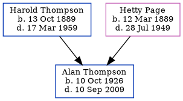

Alan Aybery Thompson 1926 - 2009
[ Home ] | [ Calendar ] | [ Surnames Index ] | [ Errors ] | [ Family History ]The child of Harold Thompson (a cowman on a farm) and Hetty Page, Alan Thompson, the fourth cousin on the father's side of Nigel Horne, was born in Dover, Kent, England on 10 Oct 19261,2,3. On 29 Sept 1939, he was living at The Bungalow, Temple Ewell, Kent, England1.
He died on 10 Sept 2009 in Dover3.
Parents
- Harold William was born on 13 Oct 1889
- Hetty Camelia was born on 12 Mar 1889
Citations
- 1939 Register - Findmypast (was the son of the head of the household)
- England & Wales births 1837-2006 - Findmypast
- United Kingdom Deaths 2007-2017 - Findmypast
Media
England & Wales births 1837-2006 - BMD/B/1926/4/AZ/001211/079
1939 Register - TNA/R39/1815/1815H/015/35
United Kingdom Deaths - BMD/D/MILLEN/001596255
Family Tree
Map
Generated by ged2site. Last updated on Jul 3, 2024
Known Issues
29 Sep 1939: Not living with either parent in childhood when aged 12